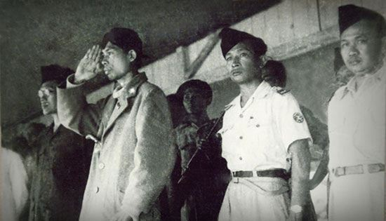

| NAMA PAHLAWAN | DESKRIPSI | MEDIA |
| Soekarno | Dr(H.C) Ir. H Soekamo (lahir di Surabaya, Jawa Tmur, 6 Juni 1901 adalah Presiden pertam
Republik Indonesia yang menjabat pada periode 1945-1967. la memankan peranan pentin
dalam memerdekakan bangsa Indonesia dari penjajahan Belanda la adalah Proklamato
&emerdekaan Indonesia (bersama dengan Mohammad Hatta) yang terjadi pada tanggal 1
Agustus 1945 . Soekarno adalah yang pertama kali mencetuskan konsep mengenai Pancasıl
sebagai dasar negara Indonesia dan ia sendiri yang menamainya. Sumber: wikipedia.com |
|
| Jendral Soedirman | Jenderal Besar Raden Soedirman adalah seorang perwira tinggi Indonesia pada masa Revolusi Nasional Indonesia. Menjadi panglima besar Tentara Nasional Indonesia pertama, ia secara luas terus dihormati di Indonesia. Terlahir dari pasangan rakyat biasa di Purbalingga, Hindia Belanda, Soedirman diadopsi oleh pamannya yang seorang priyayi. Sumber: wikipedia.com |  |